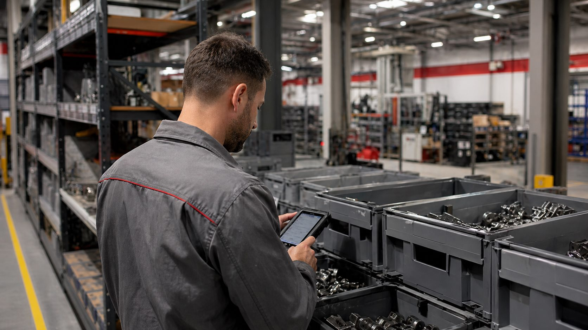
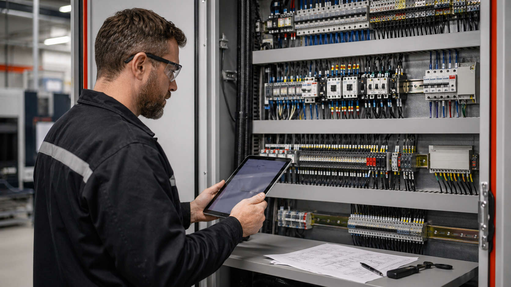

Dados industriais
Dados industriais para produção integrada.
Como transformar sinais de campo em visibilidade operacional para manutenção, produção, qualidade e gestão.
Artigo técnicoConteúdos técnicos para quem precisa melhorar confiabilidade, integrar dados, reduzir paradas e tomar decisões melhores no chão de fábrica, em utilidades e em operações offshore.

Como transformar sinais de campo em visibilidade operacional para manutenção, produção, qualidade e gestão.
Artigo técnicoO painel certo precisa mostrar causa, recorrência, impacto e prioridade de ação.
Artigo técnico
Intertravamentos, permissivos e diagnósticos precisam acompanhar a rotina real da operação.
Artigo técnico
Manutenção elétrica ganha velocidade quando documentação, layout e sinais seguem uma lógica clara.
Artigo técnico
Alarmes, tendências e comandos devem reduzir dúvida, não aumentar ruído em campo.
Artigo técnicoFale com a RBB Automação para avaliar automação, supervisão, dados industriais, painéis, CLP e diagnósticos para o seu cenário.